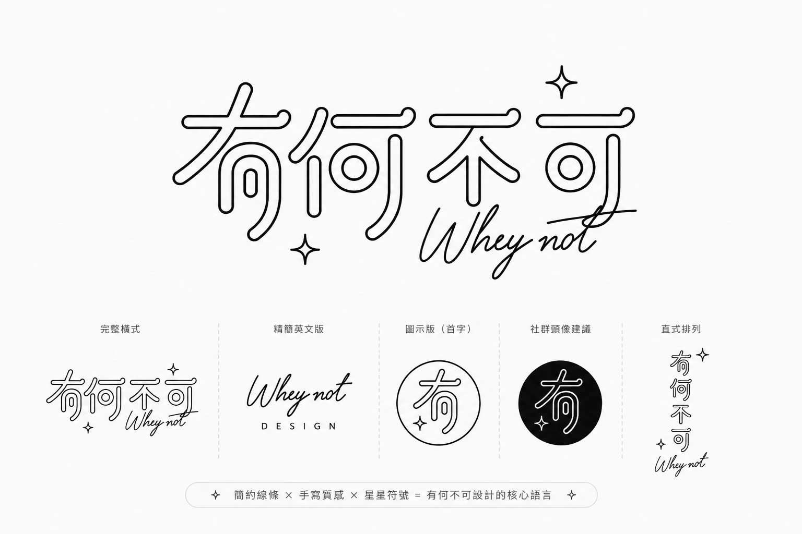

About
關於有何不可設計
從資訊整理、內容層級到視覺落地，先把問題與架構釐清，再把內容做成清楚、可使用，也能持續延伸的設計。
先建立架構，再開始設計
設計不只是在畫面上增加元素。開始製作前，先確認資料是否完整、內容如何分類、使用者要完成什麼，以及後續如何維護。
這套工作方式適用於網站、包裝、書刊、品牌視覺、LINE 官方帳號與其他資訊量較高的專案。
品牌識別系統
正式品牌資產統一由同一套來源管理，不另外改造 Logo 或自行發明版本。

經歷與專業背景
10 年以上平面與包裝設計經驗，工作範圍包含書刊排版、印刷完稿、品牌視覺、社群內容與資訊整理。
結合資訊系統背景與 AI 協作，將零散資料、流程與設計需求整理成可持續運作的系統。